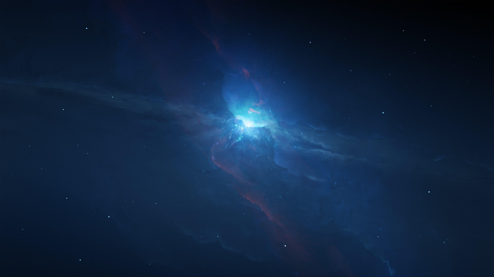

ดวงอาทิตย์
ดวงอาทิตย์เป็นดาวฤกษ์ที่อยู่ตรงกลางของระบบสุริยะและเป็นแหล่งพลังงานหลักของโลก มันประกอบด้วยไฮโดรเจนและฮีเลียมเป็นหลัก โดยการเกิดปฏิกิริยานิวเคลียร์ฟิวชันในแกนกลางผลิตพลังงานที่ทำให้เกิดแสงและความร้อน ส่งผลกระทบต่อสภาพอากาศและสภาพแวดล้อมของโลก...
ดาวเคราะห์

ในระบบสุริยะมีดาวเคราะห์ 8 ดวงที่มีการจัดหมวดหมู่เป็นสองกลุ่ม ได้แก่ ดาวเคราะห์หินและดาวเคราะห์ก๊าซ...
ดาวเคราะห์แคระ
ดาวเคราะห์แคระ เช่น พลูโต และเซอิอุส ถือเป็นวัตถุที่มีลักษณะคล้ายดาวเคราะห์ แต่มีขนาดเล็กกว่า...
ดวงจันทร์
ดวงจันทร์เป็นวัตถุที่โคจรรอบดาวเคราะห์และมีความสำคัญต่อการศึกษาระบบสุริยะ...
อุกกาบาตและดาวตก
อุกกาบาตเป็นวัตถุที่มาจากอวกาศและตกลงมายังพื้นโลก ในขณะที่ดาวตกคือการเกิดแสงที่สว่างเมื่ออุกกาบาตเข้าสู่ชั้นบรรยากาศ...